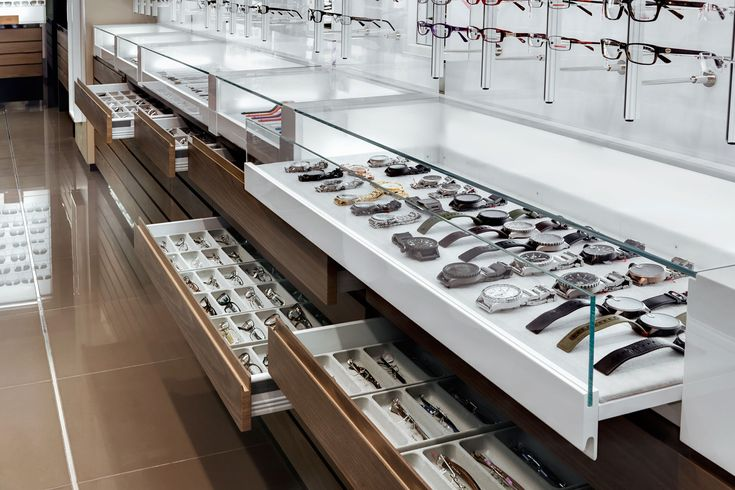

Acerca de Nosotros
En Todo Relojes, somos apasionados por la precisión y la elegancia. Fundada en 2000, nuestra tienda ha ofrecido una selección exclusiva de relojes de las mejores marcas del mundo. Nuestro compromiso es brindar productos de alta calidad y un servicio al cliente excepcional. Ubicados en el corazón de Cartagena, España, invitamos a todos los entusiastas de los relojes a descubrir nuestra colección y a disfrutar de una experiencia de compra única.
Nuestra misión es proporcionar a nuestros clientes no solo un reloj, sino un símbolo de estilo y precisión. Con una atención meticulosa a cada detalle y una dedicación incansable a la satisfacción del cliente, nos enorgullecemos de ser líderes en el sector de la relojería.
Servivio
¿De verdad te gusta tu reloj de pulsera favorito? Ya sea dentro del período de garantía o incluso más allá, un socio de servicio de confianza después de comprar un reloj en línea tiene un valor de oro.

Envío el mismo día
Las órdenes, dadas de lunes a viernes hasta las 2:00 PM CET suelen enviarse el mismo día. El tiempo de entrega estándar dentro de España es de 1 a 3 días. Los envíos dentro de los países de la UE o Suiza normalmente se entregarán al destinatario después de 3-5 días. El tiempo de entrega de los pedidos internacionales depende del servicio elegido.

Todos los artículos en stock
Desde la recepción de la mercancía, pasando por el control de calidad, hasta la recogida, empaquetado y envío, en TodoRelojes todos los productos son manejados por nuestro personal bien entrenado. Por lo tanto, podemos casi garantizar una calidad 100% consistente de nuestros productos enviados y servicios ofrecidos.

Nuestra tienda de venta al por menor
Todos los artículos de oferta en línea como "en stock" pueden ser inspeccionados también en nuestra tienda minorista y de venta al público. Si desea ver una selección especial de modelos, le recomendamos que nos llame antes de su visita para que podamos preparar estos artículos para usted. Este método le ahorra a usted y a nosotros mucho tiempo y se lo agradecemos mucho.